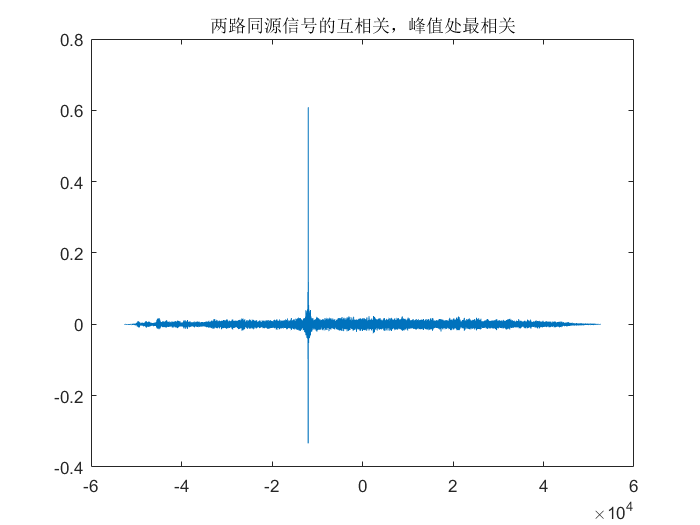
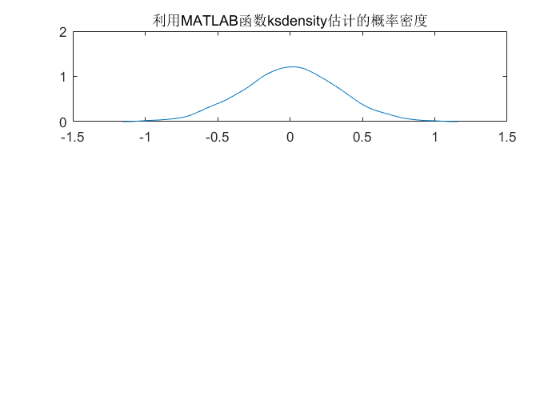
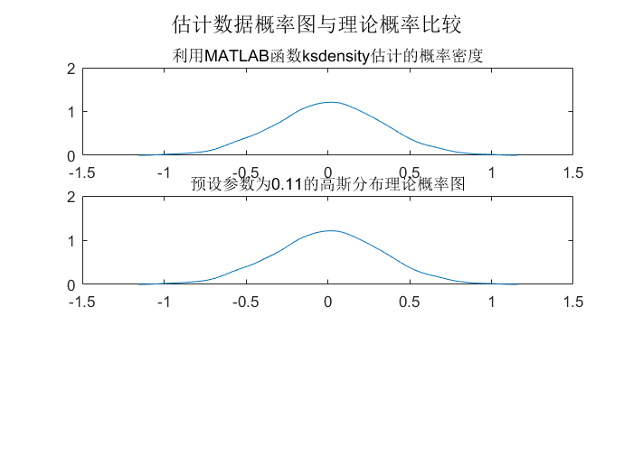
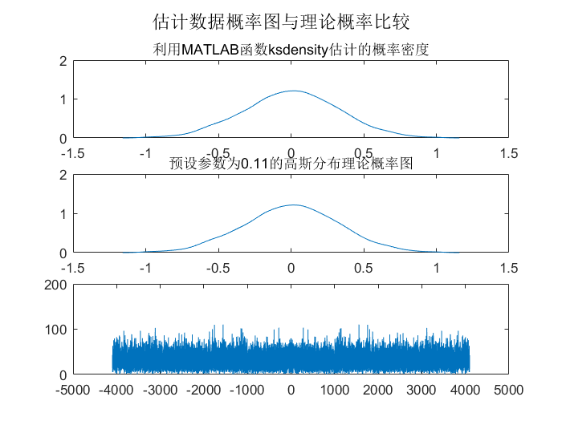

task1_4
Contents
准备环境
clear all; close all; clc;
读取数据
[filename1,filepath1]=uigetfile('.wav'); audeofile1= strcat(filepath1,filename1); [y1,Fs1] = audioread(audeofile1); [filename2,filepath2]=uigetfile('.wav'); audeofile2= strcat(filepath2,filename2); [y2,Fs2] = audioread(audeofile2); num=length(y1); disp(['声音信号频率',num2str(Fs1),'Hz。']);
声音信号频率8192Hz。
判断延迟
[x,lags]=xcorr(y1,y2,'coeff'); figure;plot(lags,x) title('两路同源信号的互相关，峰值处最相关'); [mx,indx] = max(x); TLag = abs(num - indx); disp(['经计算相关函数，估计延迟点数为：',num2str(TLag),'。']) TsLag=TLag/Fs1*1000; disp(['估计延迟时间为：',num2str(TsLag),'ms。'])
经计算相关函数，估计延迟点数为：12000。 估计延迟时间为：1464.8438ms。
进行参数计算
noise=y2(1:TLag); m = zeros(1,4); %生成[0 0 0 0] for i = 1 : TLag m(1) = m(1) + noise(i); % 均值 m(2) = m(2) + noise(i)^2; % 二阶矩 m(3) = m(3) + noise(i)^3; %三阶 m(4) = m(4) + noise(i)^4; %四阶 end m=m/TLag; disp(['生成数据的数字特征']) disp(['均值 = ',num2str(m(1))] ); disp(['均方值 = ',num2str(m(2))] ); disp(['三阶原点矩 = ',num2str(m(3))] ); disp(['四阶原点矩 = ',num2str(m(4))] ); meanValue=mean(noise); stdValue=std(noise); disp(['方差 = ',num2str(stdValue^2)] );
生成数据的数字特征 均值 = 0.0032869 均方值 = 0.1093 三阶原点矩 = -0.00026162 四阶原点矩 = 0.035162 方差 = 0.1093
和预设值对比
disp(['预设参数，均值为：',num2str(0),',方差为：',num2str(0.11)]); meanErr=meanValue; stdErr = (stdValue^2 - 0.11)/(0.11)*100; disp(['均值绝对误差为：',num2str(meanErr),' 方差相对误差为：',num2str(stdErr),' %']) [f,xi]=ksdensity(noise); figure,subplot(3,1,1),plot(xi,f); title('利用MATLAB函数ksdensity估计的概率密度');
预设参数，均值为：0,方差为：0.11 均值绝对误差为：0.0032869 方差相对误差为：-0.63765 %
t=-3:1/1000:3; y=1/sqrt(2*pi*0.1)*exp((-5)*t.^2); [f,xi]=ksdensity(noise); subplot(3,1,2),plot(xi,f); title('预设参数为0.11的高斯分布理论概率图'); suptitle('估计数据概率图与理论概率比较');
使用傅里叶变换来判断高斯分布(1)
Fs3=Fs1; f=fft(noise); a=abs(f/TLag); p1=a(1:TLag/2+1); p1(2:end-1)=2*p1(2:end-1); f1=Fs3*(0:(TLag/2))/TLag; subplot(3,1,3),plot(f1,p1);
使用傅里叶变换来判断高斯分布(2)
fs=Fs1; N=2*Fs1; n=0:N-1; x=fft(noise,N); m=abs(x); n=-N/2:N/2-1; f=n*fs/N; subplot(3,1,3),plot(f,m);
使用假设检验验证噪声的分布
A=noise; alpha=0.05; [mu,sigma]=normfit(A); p1=normcdf(A,mu,sigma); [H1,s1]=kstest(A,[A,p1],alpha); if H1==0 disp('该数据服从正态分布。') else disp('该数据不服从正态分布。') end
使用模块化假设检验验证噪声的分布
p_judge(noise,0.05);
该数据源服从正态分布。